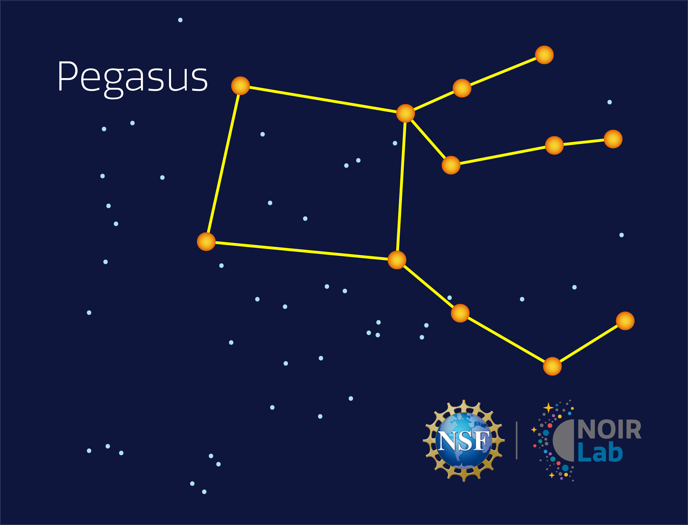
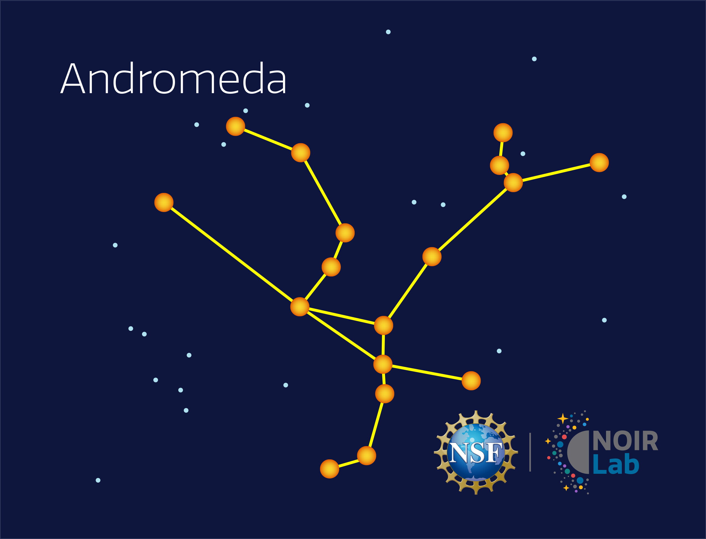
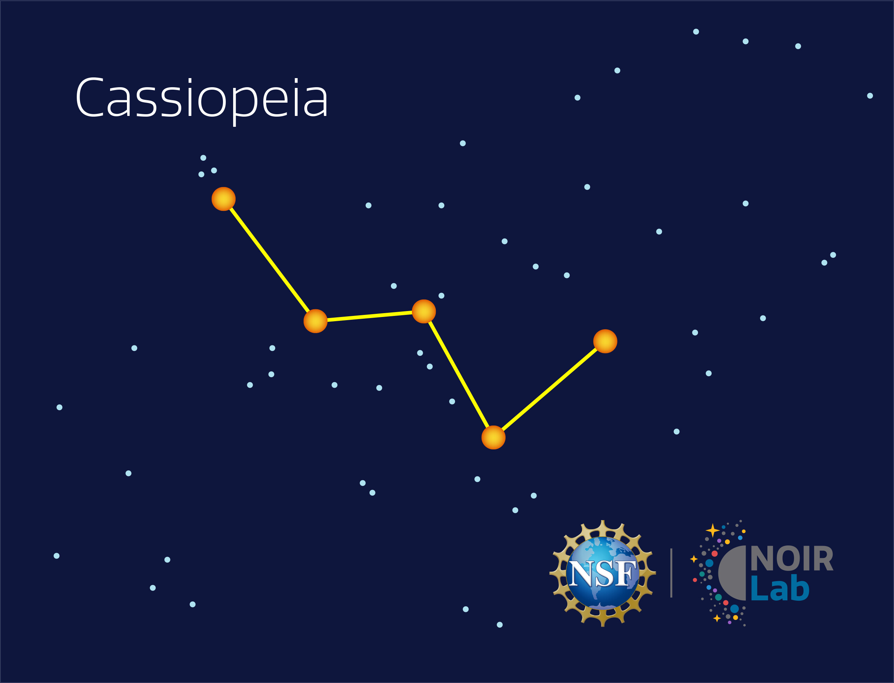
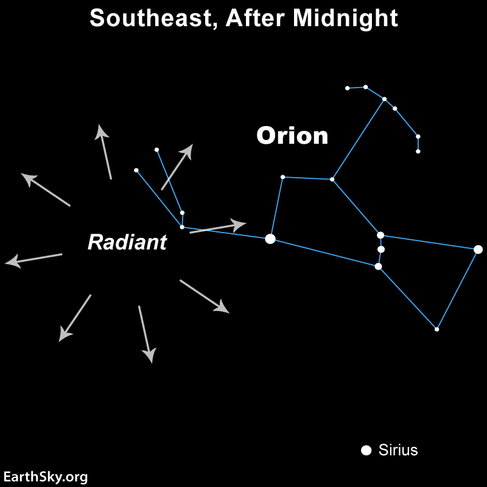

Autumn evenings in Southern California bring Pegasus, Andromeda, and Cassiopeia into view high overhead. All three connected to the same part of the sky, starting with the Great Square. The Orionid meteor shower also lights up the sky in late October.

Best known for the Great Square asterism marking the winged horse's body, Pegasus is anchored by the bright star Markab. It sits high overhead on Autumn evenings.
Click here for a real night-sky photo of this constellation.

Andromeda trails off from the northeast corner of the Great Square. It's anchored by the bright star Alpheratz and is home to the Andromeda Galaxy, the nearest large galaxy to our own.
Click here for a real night-sky photo of this constellation.

Cassiopeia is easy to spot by its "W" shape, formed by five bright stars. It sits opposite the Big Dipper across the North Star, high in the northern sky throughout autumn.
Click here for a real night-sky photo of this constellation.

Created by debris from Halley's Comet, the Orionids peak in late October and can produce up to 20 meteors per hour under dark skys. They radiate from near the constellation Orion, rising in the east after midnight.